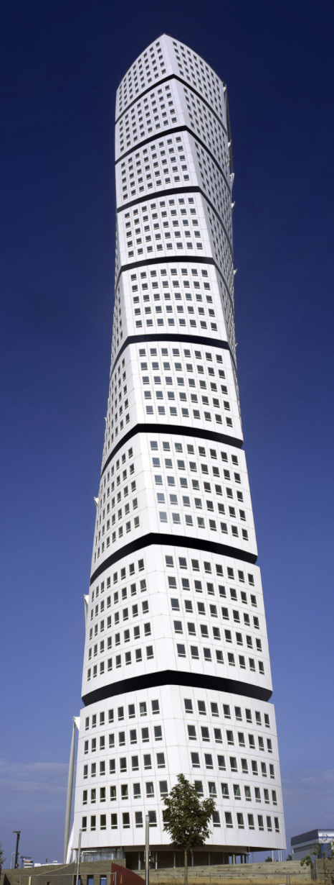
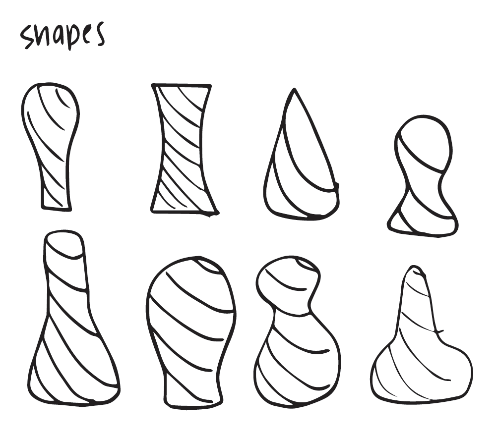
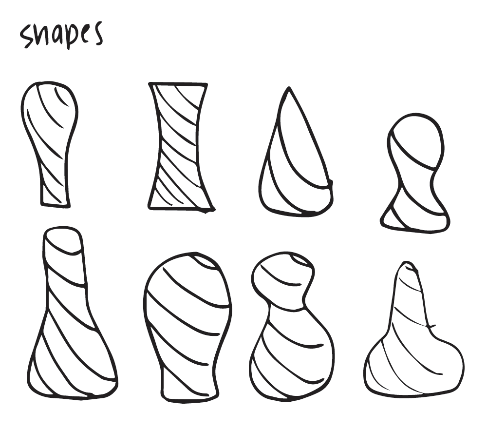
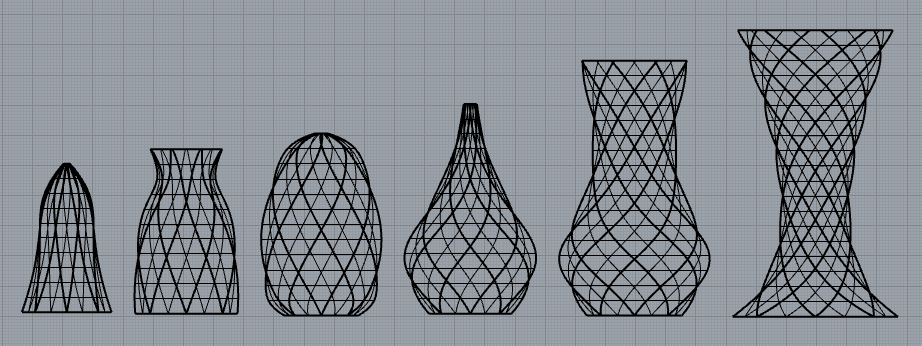
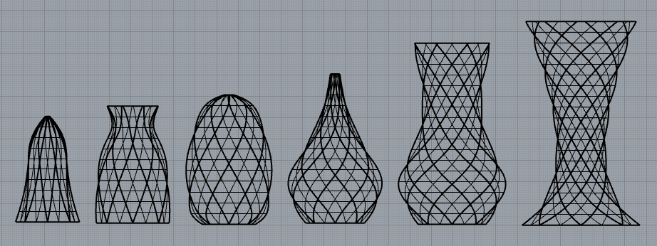
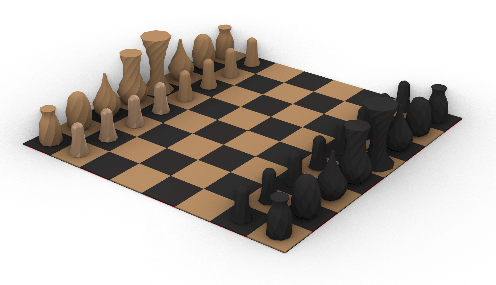
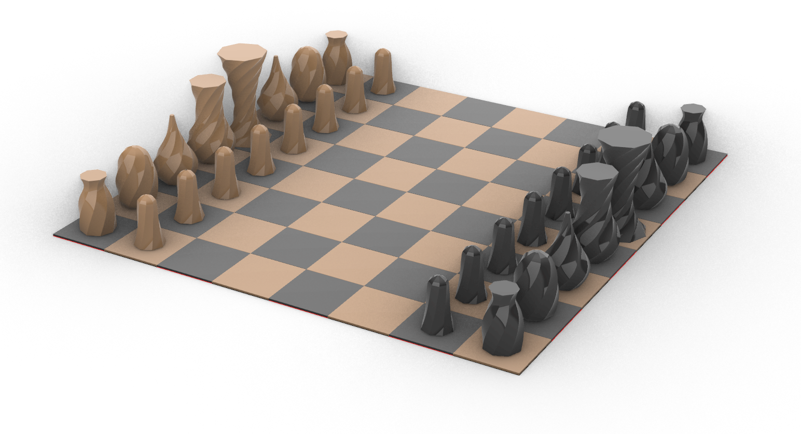
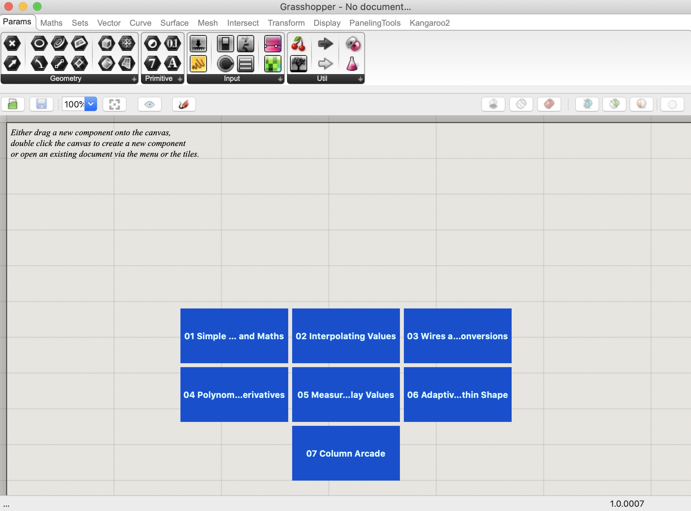

Part 1: Final Project Proposal
Concept
For my final project I wanted to create a series of pieces. After much thought I decided I wanted to make two sets of chess pieces. Santiago Calatrava is one of my favorite architects and his projects Turning Torso and Chicago Spire were the design inspirations for this project. The aim is to create a more sculptural and modern version of these classic pieces.


I started with some general shape ideas. I wanted to make sure the sets looked cohesive but not duplicative. Also, I wanted to make sure my shapes were a realistic size so I looked up guidelines for chess piece size and chess board size. Once I had my ideas and sizes, I started building the Grasshopper geometry.
 

I modeled my shapes using 6 main
 

Rendering
Below is a rendering of the intended final design. I hope to create one set that is gold and one set that is black, both in PLA filament. Due to time and print bed constraints, I do not plan to build the chessboard at this time, but wanted to include it in the rendering for context.
 
Tasks
GRASSHOPPER
For this project, I want to strengthen my Grasshopper skills. After watching a tutorial online about how to create rotating
shapes in grasshopper, I want to build all of my shapes in Grasshopper instead of sketching in Rhino and using the revolve command. Grasshopper
is used to create the height, the base radius, the rotation of the object, and using graph mapper to create unique shapes.
RHINO
Post bake, Rhino is used for flipping, capping, and aligning all pieces. It is also used for any last minute size adjustments, and
for setting up the chessboard for rendering.
SLICING
Because of the intricate rotating shapes, with their bulbous shapes, choosing the correct slicing settings will be critical to
a successful print.
PRINTING
In total, there will be 32 pieces to print: 16 pawns, 4 rooks, 4 knights, 4 bishops, 2 queens, and 2 kings. Instead of doing 32
separate prints, I will print in 3 groups for each set: 1. 8 pawns 2. 2 rooks, 2 knights, and 2 bishops 3. king and queen.
RENDERING
Because there are so many pieces to these sets, and they are two different colors, rendering is helpful to show a more realistic view of
what these pieces should look like when finished.
Timeline
As shown above, the design and rendering for this project is complete. For this process I plan to 3D print each set in 3 groups each.
The first group will be all 8 pawns (approximate printing time: 4 hrs. and 15 mins.).
The second set will include both bishops,
both knights and both rooks for a total of 6 pieces (approximate printing time: 6 hrs and 15 mins.).
The third set will be the
king and queen (approximiate printing time: 8 hrs.).
Total print time for each set is about 18.5 hours.
Because I am using two different
colors for these sets, for the interest of time, I am going to print the gold set then the black set instead of printing by the piece shape. Because
the sketches are finished in Rhino, my goal is to complete one set each week. To give myself some extra time in case something goes awry, I plan to
have the first set finished by Monday, May 24th, and the second set by Monday May 31st.
If I get completely off track for this project and the printing goes sideways my contingency plan is to print one set instead of two.

BOM and Sourcing Schedule
For the physical materials, I intend to use 2 different spools of PLA filament: one is bronze, and the other is black. I will also be using Rhino/Grasshopper to design and render these pieces. I will be using Cura to slice and create the gcode. And I will be printing on an Ender Pro 3 machine. Additionally, I will also be using filament clippers and a bed scraper. All of these materials I currently have on hand.


REFERENCES
Chess Guidelines
Turning Torso
Chicago Spire
Youtube Tutorial
PLA filament